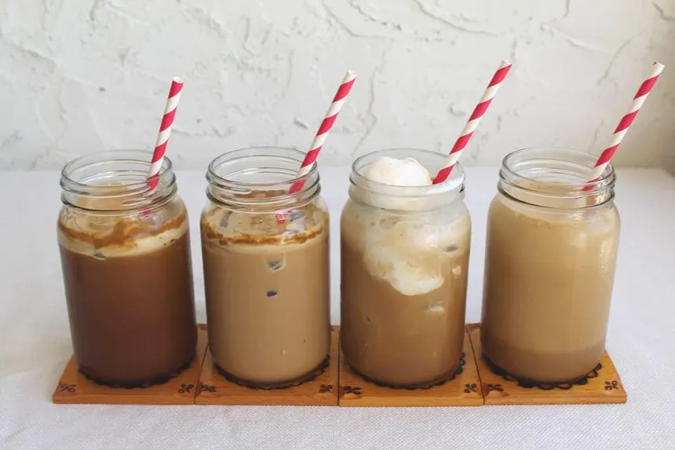

Cold frappe

how to make a cold frappe
To make a cold frappe, start by brewing a strong cup of coffee and allowing it to cool.
after that bring a small hand blender and start to blending the coffee until it gets foamy and light. Then add some ice cubes to the blender and blend again until the ice is crushed and the mixture is smooth. Next, pour the blended coffee into a tall glass and add your choice of milk or cream, along with any sweeteners or flavorings you prefer, such as sugar, vanilla extract, or chocolate syrup. Stir well to combine all the ingredients.
Finally, top your cold frappe with whipped cream and a drizzle of chocolate or caramel sauce for an extra indulgent treat. Serve immediately with a straw or a spoon, and enjoy your refreshing homemade cold frappe!
Ingredients
- Strong brewed coffee
- Ice cubes
- Milk or cream
- Sweeteners (sugar, honey, or syrup)
- Flavorings (vanilla extract, chocolate syrup, or caramel sauce)
- Whipped cream (optional)
Steps
- Brew a strong cup of coffee and let it cool.
- Use a hand blender to blend the coffee until it becomes foamy and light.
- Add ice cubes to the blender and blend again until the ice is crushed and the mixture is smooth.
- Pour the blended coffee into a tall glass.
- Add your choice of milk or cream, along with any sweeteners or flavorings you prefer, and stir well to combine.
- Top with whipped cream and a drizzle of chocolate or caramel sauce if desired.
- Serve immediately with a straw or spoon, and enjoy your refreshing homemade cold frappe!
Home